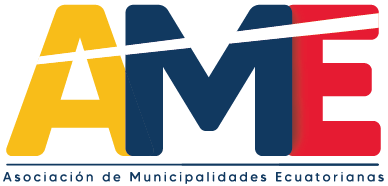

Acerca de
El portal del Sistema Nacional de Información Municipal está conformado por un conjunto de Sistemas Web que permiten a los Municipios del Ecuador el registro de información acorde a lo solicitado en cada una de las competencias municipales que han sido implementadas con el objetivo de recabar información actualizada que permita una adecuada toma de decisiones.